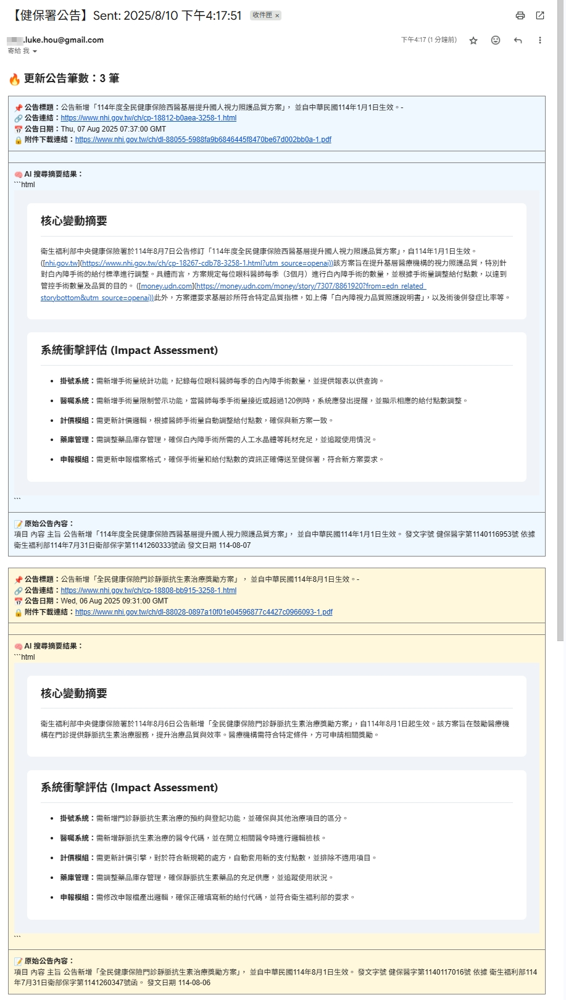

當你的競爭對手已經開始行動時，你還在等公文嗎？
我如何為醫療資訊產業打造一個自動化情報系統，每日監控健保署網站，用AI提煉政策摘要，將關鍵資訊的獲取延遲從數天縮短至數小時，搶佔市場先機。
The Challenge: 被動的資訊與錯失的先機
在高度管制的醫療資訊產業，健保署的每一則公告都可能牽動產品的開發方向與市場策略。然而，依賴傳統公文傳遞或人工定期查閱，意味著我們永遠是市場上最後知道消息的一群人。
資訊延遲
從公告發布到團隊內部知曉，往往存在數天甚至一週以上的時間差，完全錯失了應對的黃金時間。
人力浪費
需要有專人定期登入政府網站，手動檢查、下載、轉發，這些都是高成本的低價值活動。
風險劇增
若遺漏了關鍵的政策變更，可能導致產品不合規、專案重工，甚至影響公司信譽，造成巨大損失。
The Solution: 24/7 的 AI 法規情報哨兵
我打造了一個全天候自動運作的「AI情報哨兵」，它取代了所有的人工環節，確保我們在第一時間就能掌握所有關鍵的政策變動。
從監控、摘要到預警的全自動化流程
「AI情報哨兵」每日自動爬取健保署網站，一旦發現新公告，便立即啟動AI進行分析，將冗長的公文轉化為精簡的商業摘要，並附上相關連結，最後透過Email即時發送到所有利害關係人的信箱。

整個流程的核心大腦，是一個在 n8n 中運行的自動化工作流。

The Impact: 從被動應對到主動佈局
這個系統的價值，在於將整個團隊從「資訊的接收者」轉變為「策略的制定者」。
搶佔市場先機
Real-time
將資訊獲取延遲從「天」級縮短至「小時」級，讓我們比競爭對手更早一步進行產品策略調整與佈局。
顯著降低風險
-99%
消除了因人工遺漏或延誤造成的合規性風險與專案重工成本，讓開發團隊能安心專注於產品創新。
釋放高階人力
Focus
將PM與資深工程師從重複性的情報搜集工作中解放，專注於分析、決策等更高價值的策略性任務。
核心做法
- 定時網頁爬蟲 (Scheduled Web Scraping): 設定每日定時觸發，透過 n8n 的 HTTP Request 節點，自動爬取健保署「近期公告」頁面，並解析 HTML 內容，確保資訊獲取的即時性。
- AI 智慧摘要與擴大檢索: 將爬取到的公告內容送入 OpenAI API，不僅能生成簡潔易懂的重點摘要，更能透過語意搜尋，找出可能相關的歷史公告，提供更完整的決策參考。
- 可靠的通知機制: 無論當天是否有新公告，系統都會發送通知信。若有新公告，信件會包含 AI 生成的摘要；若無，則會發送「今日無新公告」的提醒，讓接收者明確知道系統正常運行，而非流程故障。這個設計大幅提升了使用者對自動化系統的信任感。